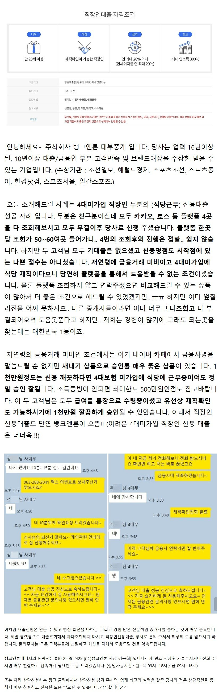
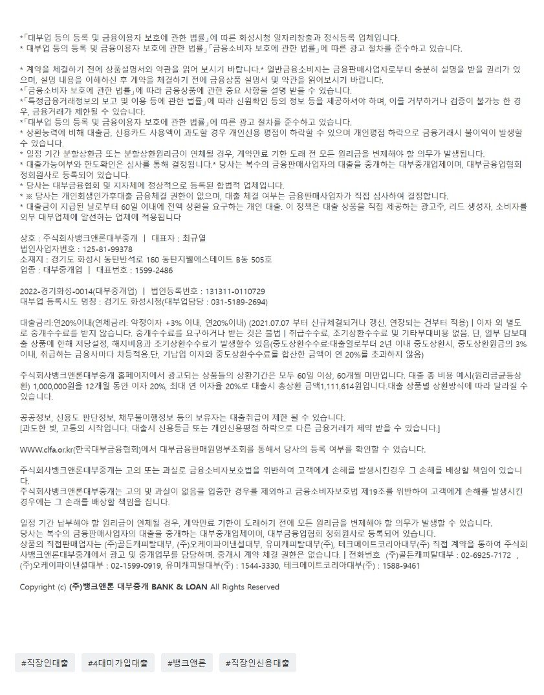

대출사례[직장인신용대출] 플랫폼 4곳 조회 모두 부결후 당사로 문의주신 고객님 1000만 17,18% 승인 사례!! (4대미가입 식당 재직중인 05년생 새내기대출 승인)원본 등록일 2026.02.05 · 글 번호 3799 · 백업 당시 조회수 975  상담신청 -> https://cafe.naver.com/cityman88/29497  https://cafe.naver.com/cityman88/310068